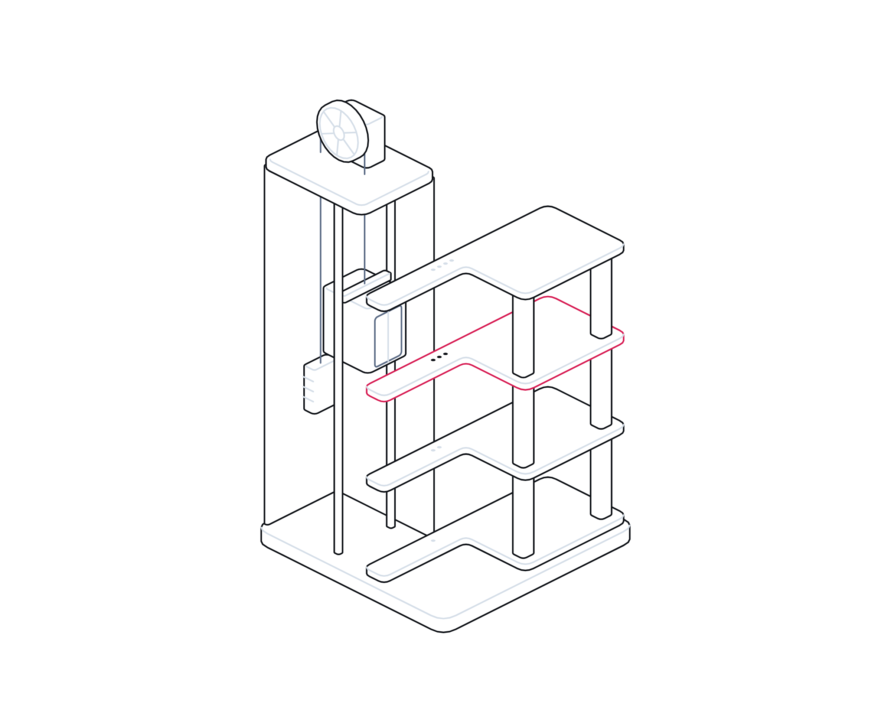

Safe Homes, Clear Duties

Intelligence report · No. 02
Week of 16 November 2026
Property, Housing and Facilities · Intelligence report
Safe homes,
clear duties.
Awaab's Law, the Building Safety Act, new evacuation duties and attacks on building controls. What the evidence says about keeping residents safe and informed, and what UK landlords and building managers should do now.
Evidence-based · Every figure sourcedwww.crises-control.com
Inside
Contents
An evidence-based look at the duties that now govern how landlords and building managers keep residents safe and informed in an emergency, the lessons of the Grenfell Tower Inquiry, and the new risk to building controls.
Executive summary03
Key findings04
01The new duties07
02The lessons11
03The new threat15
Coordination, use cases, readiness and buyer's guide22
Sources26
CRISES CONTROLContents Safe Homes, Clear Duties · Crises Control · Property, Housing and Facilities02 / 28
Executive summary
Telling residents what is happening, and proving you did, is now a legal duty as much as a courtesy.
Since October 2025 social landlords in England have had 24 hours to investigate and make safe emergency hazards in tenants' homes.1 From 30 November 2026 the same regime extends to further hazards including fire, electrical hazards and excess cold.2,3 Responsible persons for multi-occupied residential buildings must already give residents fire safety instructions, and from April 2026 taller blocks need evacuation plans for residents who cannot get out unaided.4,5
These duties follow the Grenfell Tower Inquiry. Its Phase 2 report found that the landlord's information about vulnerable residents was incomplete on the night of the fire, that the fire brigade's control room was not prepared for a flood of calls, and that the council had no effective system for communicating with those affected.6
A new risk has joined the old ones. In October and November 2026, attackers reached internet-exposed refrigeration controllers across Europe, including at a few UK businesses.7,8 The UK's National Cyber Security Centre warned that heating and other building controls could also be at risk if left unprotected.9
This report sets out the duties, the evidence behind them and the emerging threat, and ends with practical recommendations for UK landlords, managing agents and facilities leaders.
The bottom line
Treat resident communication as part of the safety system: know who is in each building and who needs help, reach them in minutes on more than one channel, keep building controls off the internet, and keep a timestamped record of every decision.
CRISES CONTROLExecutive summary Safe Homes, Clear Duties · Crises Control · Property, Housing and Facilities03 / 28
Key findings
Seven things the evidence tells us
01
Response times are now law for social landlords.
Emergency hazards must be investigated and made safe within 24 hours of the landlord becoming aware of them.1,2
02
The scope widens on 30 November 2026.
Phase 2 of Awaab's Law adds fire, electrical, excess cold and heat, falls, structural collapse and domestic hygiene hazards.2
03
Residents must be told how to stay safe, every year.
Fire safety instructions go to new residents promptly and to all residents every 12 months.4
04
Vulnerable residents now have specific rights.
In scope buildings, residents who cannot evacuate unaided must be offered an assessment and an evacuation plan.5
05
Grenfell's communication failures were systemic.
Incomplete records of vulnerable residents, an overwhelmed control room and no way to reach displaced people all contributed.6,10
06
Communication is where landlords most often fail residents.
The Housing Ombudsman found poor communication and record keeping running through its most serious repairs cases in 2025-26.11
07
Exposed building controls are a live target.
Attacks on refrigeration controllers in 2026 used internet-exposed interfaces and, in some cases, published default passwords.7,8
CRISES CONTROLKey findings Safe Homes, Clear Duties · Crises Control · Property, Housing and Facilities04 / 28
At a glance
Building safety and communication, in six figures
Each figure is sourced. Legal duties are summarised; the regulations set out the detail.
24 hours
To investigate and make safe an emergency hazard in social housing under Awaab's Law.1
30 Nov
2026: the date Phase 2 of Awaab's Law is due to apply, after approval by both Houses in October.2,3
58
Grenfell Phase 2 recommendations. The government accepted all of them, 49 in full and 9 in principle.12
12 months
How often residents of multi-occupied buildings must be given fire safety instructions.4
62%
Share of Housing Ombudsman findings in 2025-26 that were maladministration.11
53%
Fall in internet-exposed refrigeration controllers Censys observed between 9 October and 5 November 2026.13
CRISES CONTROLAt a glance Safe Homes, Clear Duties · Crises Control · Property, Housing and Facilities05 / 28
Timeline
From Grenfell to Awaab's Law
Key dates for residential and building safety communication.
14 June 2017
Grenfell Tower fire
Fire sweeps through the tower in a few hours. A public inquiry follows.6
23 January 2023
Fire Safety (England) Regulations
Duties on resident information, fire doors, lifts and secure information boxes take effect.4
4 September 2024
Grenfell Phase 2 report
Fifty-eight recommendations, including on emergency planning and vulnerable residents.10
26 February 2025
Government response
All 58 recommendations accepted, 49 in full and 9 in principle.12
27 October 2025
Awaab's Law Phase 1
24-hour duty for emergency hazards, and damp and mould timescales, in social housing.1
27 January 2026
Building Safety Regulator stands alone
The regulator leaves the HSE to become an arm's length body of MHCLG.14
6 April 2026
Residential evacuation plans
Person-centred fire risk assessments and evacuation plans in scope buildings.5
12 October to 5 November 2026
Attacks on refrigeration controllers
CERT-FR alert, a second European wave, NCSC alerts to UK firms and a US fact sheet.7,8,13,15
30 November 2026
Awaab's Law Phase 2
Fire, electrical, excess cold and other hazards brought into the timescales.2
CRISES CONTROLTimeline Safe Homes, Clear Duties · Crises Control · Property, Housing and Facilities06 / 28
Part 01
The new
duties.
What the law now requires landlords and building managers to do, and to tell residents.
01Awaab's Law and the 24-hour clock
02The duties at a glance
03Fire safety, evacuation and the regulator
CRISES CONTROLPart 01 Safe Homes, Clear Duties · Crises Control · Property, Housing and Facilities07 / 28
Awaab's Law
Awaab's Law and the 24-hour clock
The clock starts when the landlord becomes aware, often through an out-of-hours call.
The Hazards in Social Housing (Prescribed Requirements) (England) Regulations 2025, known as Awaab's Law, came into force on 27 October 2025.1 They apply to social landlords in England.
An emergency hazard is defined as one that poses an imminent and significant risk of harm to the health or safety of an occupier, which a reasonable landlord would act on to make safe within 24 hours.1 The landlord must investigate and complete any safety work as soon as reasonably practicable, and within 24 hours of the duty applying.1 Government guidance puts it plainly: both must be completed within 24 hours of becoming aware of the hazard.2
The regulations also govern communication. After an investigation, the landlord must give the tenant a written document setting out its findings within three working days, and keep the tenant informed about the timing and progress of work.1 Where a home cannot be made safe in time, the landlord must secure suitable alternative accommodation at no cost to the household.1
Phase 1 covered emergency hazards and significant damp and mould. Amending regulations, approved by the House of Lords on 14 October and the House of Commons on 20 October 2026, are due to extend the regime from 30 November 2026.3 Phase 2 adds excess cold and heat, falls, structural collapse, fire and explosions, electrical hazards and domestic hygiene where they present a significant risk of harm.2
There is one carve-out that matters for building managers. Guidance states that Awaab's Law does not apply to fire hazards in communal areas already covered by the Regulatory Reform (Fire Safety) Order 2005, such as damaged fire doors or blocked escape routes, which remain for the responsible person.2,16 Fire hazards inside homes, such as broken smoke alarms, are in scope.2
The practical effect is a clock that starts when a landlord becomes aware, often through an out-of-hours call. Meeting it depends on reports reaching the right person quickly and on a reliable record of when each step happened.
CRISES CONTROLAwaab's Law Safe Homes, Clear Duties · Crises Control · Property, Housing and Facilities08 / 28
At a glance
The duties that shape emergency communication
England only. Summaries; the regulations and guidance contain conditions and exceptions.
Law
Applies to
What it requires on communication
Awaab's Law
Social landlords1
Emergency hazards investigated and made safe within 24 hours; written findings to tenants; progress updates.
Fire Safety (England) Regulations 2022
Responsible persons for multi-occupied residential buildings4
Fire safety instructions and fire door information to residents; lift faults over 24 hours reported to the fire service in high-rise blocks.
Residential Evacuation Plans Regulations 2025
Blocks of 18m or seven storeys, or over 11m with simultaneous evacuation5
Identify residents who need help, offer assessment and plans, share basic details with the fire service with consent.
Building Safety Act 2022, s91
Principal accountable persons for occupied higher-risk buildings17
A residents' engagement strategy covering information, consultation and how views are taken into account.
Building Safety Act 2022, s87
Accountable persons for occupied higher-risk buildings18
Prescribed safety occurrences reported to the Building Safety Regulator.
CRISES CONTROLThe new duties Safe Homes, Clear Duties · Crises Control · Property, Housing and Facilities09 / 28
Fire and evacuation
Fire safety, evacuation and the regulator
Basic details go to the fire service only with the resident's explicit consent.
The Fire Safety (England) Regulations 2022 came into force on 23 January 2023.4 In any building with two or more homes and common parts used for evacuation, the responsible person must display fire safety instructions covering the evacuation strategy and how to report a fire, give them to new residents promptly and to all residents every 12 months, and tell residents about fire doors.4
Buildings of at least 18 metres or seven storeys carry more. They need a secure information box, floor and building plans for the fire service, wayfinding signs that can be read in low light, and monthly checks of firefighting and evacuation lifts. A lift fault that cannot be fixed within 24 hours must be reported to the fire and rescue service, and so must the fix.4
From 6 April 2026, the Fire Safety (Residential Evacuation Plans) (England) Regulations 2025 apply to blocks of at least 18 metres or seven storeys, and to those over 11 metres with a simultaneous evacuation strategy.5 The responsible person must use reasonable endeavours to identify residents who cannot evacuate unaided, offer a person-centred fire risk assessment, agree an emergency evacuation statement, and prepare a building emergency evacuation plan for the fire service. Basic details go to the fire service only with the resident's explicit consent.5
For higher-risk buildings, the Building Safety Act 2022 adds a residents' engagement strategy, setting out what information residents will receive about building safety decisions and what they will be consulted on, and a duty to report prescribed safety occurrences to the regulator.17,18
The Building Safety Regulator became a standalone body sponsored by MHCLG on 27 January 2026, a step towards the single construction regulator the Grenfell Tower Inquiry recommended.14 The government's response to the inquiry also notes that statutory guidance now requires evacuation alert systems in new blocks of flats over 18 metres.12
CRISES CONTROLFire and evacuation Safe Homes, Clear Duties · Crises Control · Property, Housing and Facilities10 / 28
Part 02
The
lessons.
What the Grenfell Tower Inquiry and the Housing Ombudsman say about communication when it matters most.
01What Grenfell revealed
02Four failures of information
03The everyday test
CRISES CONTROLPart 02 Safe Homes, Clear Duties · Crises Control · Property, Housing and Facilities11 / 28
Grenfell Phase 2
What the Grenfell Tower Inquiry found about communication
None of these failures needed new technology to avoid. They needed current records and rehearsed plans.
The Phase 2 report, published on 4 September 2024, set out how a concrete tower became a death trap through the failings of many institutions over many years.6
Before the fire, the landlord's emergency plan for the tower was out of date and incomplete, and the absence of fire action notices was a prominent subject of complaints by residents.6 Its data systems on vulnerable residents were not co-ordinated, and the spreadsheet available on the night was incomplete: a basic neglect of its fire safety obligations, the inquiry said.6
During the fire, the London Fire Brigade had not prepared for a large number of calls from people needing rescue. Staff were forced to improvise ways of handling the information, and it had not produced contingency plans for a full evacuation.6
After the fire, the response of government and the council in the first week was described as muddled, slow, indecisive and piecemeal.6 The council had no arrangements for identifying people forced from their homes or for communicating with them, and arrangements for obtaining and sharing reliable information were lacking.6
The inquiry's recommendations follow from this. Local authorities should practise recording information about displaced people and communicate continuously with those who need help, in suitable languages. Responsible persons should collect enough information about vulnerable occupants to assist their escape.10
None of these failures needed new technology to avoid. They needed current records, rehearsed plans and someone accountable for telling people what was happening.
CRISES CONTROLGrenfell Phase 2 Safe Homes, Clear Duties · Crises Control · Property, Housing and Facilities12 / 28
Four failures
Four failures of information the inquiry identified
Each has a direct counterpart in today's duties.

01
Records of who needs help
Incomplete information on vulnerable residents on the night. Now addressed by residential evacuation plans in scope buildings.5,6
02
Instructions residents can follow
An out-of-date emergency plan and missing fire action notices. Now addressed by annual fire safety instructions.4,6
03
Handling a surge of calls
No preparation for many simultaneous calls for rescue, and improvised information handling.6
04
Reaching people afterwards
No system to identify or communicate with displaced residents, and no reliable records.6,10
CRISES CONTROLThe lessons Safe Homes, Clear Duties · Crises Control · Property, Housing and Facilities13 / 28
The everyday test
The everyday test: what the Ombudsman sees
A resident who has waited weeks for a reply about a leak will not trust an instruction to stay put at 2am.
Emergencies test communication that is already in place. The Housing Ombudsman's Annual Complaints Review for 2025-26 shows how often that everyday communication falls short. Of its findings, 62% were maladministration and a further 2% severe maladministration.11
Responsive repairs featured in 80% of cases and accounted for most severe findings. Across those severe cases, the Ombudsman identified poor communication and inadequate record keeping as recurring failures.11 Damp, mould and leaks made up a large share of repairs complaints, the same territory Awaab's Law now governs.11
The Ombudsman reports that Awaab's Law cases are beginning to reach it, and that early insights suggest landlords are struggling to identify them and respond within the timescales.11
Records matter as much as messages. A landlord that cannot show when it was told about a problem, what it did and what it told the resident will find the same gap exposed when an emergency hazard and its 24-hour clock are disputed.
The lesson for landlords is uncomfortable but useful. A resident who has waited weeks for a reply about a leak will not trust an instruction to stay put at 2am. Trust built in ordinary times is what makes emergency messages work.
CRISES CONTROLThe everyday test Safe Homes, Clear Duties · Crises Control · Property, Housing and Facilities14 / 28
Part 03
The new
threat.
Building controls connected to the internet, and what the 2026 attacks mean for landlords and facilities teams.
01When building controls are attacked
02What good control looks like
03What it means for UK organisations
CRISES CONTROLPart 03 Safe Homes, Clear Duties · Crises Control · Property, Housing and Facilities15 / 28
Building controls
When building controls are attacked
Exposed controllers were reached with weaknesses that had been known for a long time.
On 12 October 2026 France's national CERT issued an alert after numerous compromises of remote controllers for refrigeration installations, naming Danfoss AK-SM and AK-SC, Copeland XWEB and Dixell XWEB products.7 It said attack campaigns were probably still under way and that exposing these management interfaces to the internet was contrary to good practice.7
Censys reported that the night of 11 October attacks switched units at hundreds of French supermarkets into defrost. Overnight on 2 November, grocers in Belgium, Estonia, Ireland, Luxembourg, the Netherlands and Sweden reported similar attacks.13 In the UK, three members of the Association of Independent Meat Suppliers and a fruit and vegetable wholesaler were affected; no stock was reported lost.8
The NCSC's director of operations said the attacks used vulnerabilities that had been out there for a long time and were not sophisticated. Its chief executive called them the foothills of a wider threat.8 In remarks reported by PA Media, he named heating and refrigeration controls among systems often under-secured.9
US agencies described the risk in terms any building manager will recognise. Attackers could change temperatures, creating fire hazards and equipment damage, and cause a loss of visibility of current conditions. Their advice: remove internet exposure, separate operational technology from business networks, change default passwords, patch or replace end-of-life devices, log activity and set safe limits with alerts.15
No compromise of a UK building management system was confirmed in this wave, and we found no public evidence that residential buildings were targeted. But the controllers that run heating, ventilation, lifts, pumps and smoke control are often managed remotely by contractors in the same way. CERT-FR warns that resetting an end-of-life device that stays exposed leaves it open to reinfection.7 The NCSC publishes guidance on secure connectivity for operational technology.19
CRISES CONTROLBuilding controls Safe Homes, Clear Duties · Crises Control · Property, Housing and Facilities16 / 28
Building controls
What most organisations get wrong
Building controls are usually owned by facilities, maintained by contractors and invisible to IT. That gap is where the risk sits.
Area
What often happens
What good looks like
Inventory
Nobody holds a list of BMS, lift, plant and refrigeration controllers.
A list of every controller, its location, owner, contractor and how it is reached.
Remote access
A web page left open so a contractor can log in from anywhere.
Access only through a secured connection, with internet exposure removed.7,15
Passwords
Factory defaults, sometimes printed in public manuals.
Defaults changed, accounts named, stronger authentication where feasible.8,15
Lifecycle
Controllers run for years past vendor support.
End-of-life devices identified, isolated and replaced.15
Monitoring
Changes noticed only when residents complain.
Safe setpoint limits with alerts, and logs reviewed.15
In an incident
A contractor resets the device remotely.
Settings recorded first, access cut, residents told what to expect.
CRISES CONTROLThe new threat Safe Homes, Clear Duties · Crises Control · Property, Housing and Facilities17 / 28
UK relevance
What it means for UK organisations in Property, Housing and Facilities
Out-of-hours reporting, contractor response and the record of awareness will be tested more often.
For social landlords, the immediate priority is the Awaab's Law clock. From 30 November 2026 more hazards fall within it, including electrical faults and excess cold.2 Out-of-hours reporting routes, contractor response and the record of when the landlord became aware will be tested more often.
For anyone responsible for a block of flats, fire safety communication is a standing duty, not a one-off. Annual instructions, fire door information and, in taller buildings, lift fault reporting are already required.4 In scope buildings, residents who need help to evacuate must be identified and offered plans, with consent to share basic details.5
For higher-risk buildings, the residents' engagement strategy and mandatory occurrence reporting create a clear expectation of what residents are told, and what the regulator hears about.17,18 A standalone regulator focused on building safety is likely to ask for evidence.14
For facilities teams in offices, campuses and mixed-use buildings, the 2026 attacks are a prompt to find every building controller that can be reached from the internet. Loss of heating, ventilation or access is an operational emergency, and in residential settings a welfare one.9,15
Across all of these, the Grenfell findings point to the same capabilities: current records of who is in the building and who needs help, rehearsed ways of reaching people quickly, and reliable records of what was done.6,10
CRISES CONTROLUK relevance Safe Homes, Clear Duties · Crises Control · Property, Housing and Facilities18 / 28
Recommendations
Seven steps for landlords and building managers
01
Map the clock
Trace how an out-of-hours hazard report reaches a decision-maker, and how awareness is timed.1,2
02
Know who needs help
Current, consented records of residents who may need help to evacuate.5,10
03
Take building controls off the internet
Inventory BMS and plant controllers, remove exposure and change default passwords.7,15
04
Approve messages in advance
Templates for each emergency, consistent with residents' fire safety instructions.4
05
Reach people on more than one channel
Use suitable technology and languages, and track who has not acknowledged.10
06
Log every decision
Timestamp each alert, decision and acknowledgement.
07
Exercise at night
Rehearse a night incident with a strategy change, at least annually.
CRISES CONTROLWhat to do Safe Homes, Clear Duties · Crises Control · Property, Housing and Facilities19 / 28
For the board
Questions boards should ask this quarter
Answers should be specific, dated and owned.
Duties
?Are we meeting the 24-hour emergency hazard timescale, and are we ready for the hazards added on 30 November?
?In which of our buildings do residential evacuation plan duties apply, and how many residents have been offered an assessment?
?When did every resident last receive fire safety instructions?
Readiness
?How long would it take to reach every resident of our largest building at 3am, and how would we know who we had missed?
?Which of our building controllers can be reached from the internet, and who can change them?
?Could we produce a timed record of every decision from our last serious incident?
CRISES CONTROLWhat to do Safe Homes, Clear Duties · Crises Control · Property, Housing and Facilities20 / 28
Glossary
Terms used in this report
Awaab's Law
The common name for the Hazards in Social Housing (Prescribed Requirements) (England) Regulations 2025.
Emergency hazard
A hazard posing an imminent and significant risk of harm that a reasonable landlord would make safe within 24 hours.
Responsible person
The person with duties under the Fire Safety Order for the common parts of a building.
Higher-risk building
In occupation, a building at least 18 metres or seven storeys tall with at least two residential units.
Accountable person
A person who holds a legal estate in, or has a repairing obligation for, the common parts of a higher-risk building.
Residential PEEP
A personal emergency evacuation plan for a resident who cannot evacuate unaided.
Simultaneous evacuation
A strategy in which everyone leaves at once, used where stay put is not appropriate.
Safety occurrence
An incident or situation relating to fire spread or structural integrity that must be reported to the regulator.
BMS
Building management system: controls for heating, ventilation, lighting, pumps and sometimes lifts and access.
Operational technology
Systems that monitor and control physical equipment, as opposed to business IT.
CRISES CONTROLGlossary Safe Homes, Clear Duties · Crises Control · Property, Housing and Facilities21 / 28
Why coordination, not just notification
Most organisations can send alerts.
Few can manage incidents end-to-end.
When a fire alarm sounds in a high-rise at 02:10, a text to residents is minute one. Keeping everyone safe depends on which residents need help, which contractor is on the way, who changed the evacuation strategy, and a record you can stand behind later.
Where incidents go wrong
01Fragmented informationDifferent teams work from different information.
02Delayed decision makingLeadership lacks visibility, so decisions wait.
03Uncoordinated responseSeveral teams work independently on the same problem.
04Lack of visibilityCritical actions become difficult to track.
05Lack of accountabilityActions and decisions are poorly documented.
The whole incident, in one platform
Crises Control is an Operational Incident Coordination Platform. It helps organisations maintain operational control during incidents by combining alerting, coordination, execution, visibility and accountability in one platform.
CRISES CONTROLCoordination, not just notification Safe Homes, Clear Duties · Crises Control · Property, Housing and Facilities22 / 28
Use cases
How organisations use Crises Control in property, housing and facilities
From the first alert to the final record: the incidents this platform is used for, and how the modules work together in each.
Resident emergency communication
INTENDED USETRIGGER Fire, evacuation, flooding, gas incident or another building emergency
Notify residents and building teams, provide instructions and updates, and use responses to identify who has acknowledged or needs follow-up.
PingIncident Managertwo-way responseControl Centre
Resident welfare and assistance checks
SUGGESTED APPLICATIONTRIGGER An incident affects residents who may need additional help or have not responded
Collect resident status responses, identify outstanding acknowledgements and direct follow-up to the appropriate building or welfare team.
PingIncident ManagerControl CentreTask Manager
Contractor and facilities coordination
SUGGESTED APPLICATIONTRIGGER Lift failure, water leak, power outage, heating failure or urgent repair
Notify facilities teams and contractors, assign inspection and repair tasks, set owners and deadlines, and monitor completion.
PingIncident ManagerTask ManagerControl CentreAudit & Reporting
Multi-building incident management
SUGGESTED APPLICATIONTRIGGER An incident affects several buildings or properties in a managed portfolio
Target communications to affected properties, coordinate local building teams and contractors, and maintain a consolidated view of response activity.
PingIncident ManagerTask ManagerControl CentreAudit & Reporting
Out-of-hours incident response
SUGGESTED APPLICATIONTRIGGER An overnight or weekend emergency requires on-call managers or contractors
Alert the on-call response group, track acknowledgement, escalate non-response and coordinate actions until the incident is resolved.
PingIncident ManagerTask ManagerControl Centre
Customer examples are based on how customers use Crises Control today; customer names have been removed. Customer requirements describe needs raised by customers or in evaluations. Intended, suggested and illustrative use cases show how the platform can be applied and are not presented as existing customer deployments. Capabilities marked 'where configured' or 'where supported' depend on each organisation's set-up.
CRISES CONTROLUse cases Safe Homes, Clear Duties · Crises Control · Property, Housing and Facilities23 / 28
Readiness assessment
How ready is your response?
Score each area from 0 (not in place) to 3 (fully in place) for your property and housing organisation, then add up the total.
AreaThe questionScore 0 to 3
Can you reach the right people on more than one channel within minutes, day or night?
GOOD LOOKS LIKE Residents, staff and contractors reached on several channels, including people without smartphones.
02 · ACTIVATION
Acknowledge
Do you know who has seen the alert, and does silence trigger escalation automatically?
GOOD LOOKS LIKE Acknowledgement tracked by block and by flat; vulnerable residents followed up first.
03 · COORDINATION
Escalate
Are escalation paths set by role and time, not by whoever remembers who to call?
GOOD LOOKS LIKE Out-of-hours escalation to the duty manager and contractor is automatic.
04 · COORDINATION
Coordinate
Is there one shared workspace and log for the incident, not scattered calls, chats and inboxes?
GOOD LOOKS LIKE One log for the incident, shared by housing, repairs, the fire service liaison and communications.
Are your procedures turned into owned tasks with deadlines that someone can track?
GOOD LOOKS LIKE Awaab's Law and fire safety actions run as tasks with owners and deadlines.
Can leaders see tasks, people, locations and blockers live, without having to ask?
GOOD LOOKS LIKE A live view of buildings, residents contacted and jobs outstanding.
Could you produce a timestamped timeline for a regulator, insurer or inquiry within a day?
GOOD LOOKS LIKE A defensible, timestamped record of every decision and message.
Do you exercise the whole response, not just the call tree, at least once a year?
GOOD LOOKS LIKE Night-time scenarios rehearsed, including a change from stay put to evacuation.
0 to 8
Alerting only
You can send messages. The response still depends on people and luck.
9 to 16
Coordinating in parts
Some steps work. Gaps appear at night, at scale or when systems fail.
17 to 24
Coordinated and provable
You can run the response and show exactly what happened.
CRISES CONTROLReadiness assessment Safe Homes, Clear Duties · Crises Control · Property, Housing and Facilities24 / 28
Buyer's guide
Eight questions to ask any incident platform supplier
Many tools can send an alert. These questions separate a notification tool from a platform that coordinates the whole response.
01
Does it stop at the message?
Ask what the platform does after the alert is sent: tasks, log, escalation, recovery.
02
Can it prove who acknowledged?
Delivery is not acknowledgement. Ask how silence is detected and escalated.
03
Does it run your procedures?
Ask whether your plans become owned tasks with deadlines, or stay as documents.
04
Is there one shared picture?
Ask what leaders see live, and whether it needs someone to update a spreadsheet.
05
Does it work when your systems do not?
Ask how teams coordinate if email, chat or your network is down.
06
Can frontline staff raise the alarm?
Ask how a colleague on site escalates, with their location where supported, in one action.
07
What evidence does it leave behind?
Ask for a sample timeline of the kind a regulator, insurer or inquiry would want.
08
Can you rehearse in it?
Ask whether you can run exercises on the same platform you would use for real.
CRISES CONTROLBuyer's guide Safe Homes, Clear Duties · Crises Control · Property, Housing and Facilities25 / 28
Sources
Sources and notes
Sources were accessed in November 2026. Where reports differ, we say so in the text. Early reporting on live incidents can change.
01
Hazards in Social Housing (Prescribed Requirements) (England) Regulations 2025 (SI 2025/1042), made 23 September 2025, in force 27 October 2025, https://www.legislation.gov.uk/uksi/2025/1042/made
02
MHCLG, Awaab's Law: Phase 2 guidance for social landlords, updated 31 July 2026, https://www.gov.uk/government/publications/awaabs-law-phase-2-guidance-for-social-housing-landlords/awaabs-law-phase-2-guidance-for-social-landlords
03
UK Parliament, Statutory instrument procedure: Hazards in Social Housing (Prescribed Requirements) (England) (Amendment) Regulations 2026, laid 12 July 2026, approved 14 and 20 October 2026, https://api.parliament.uk/procedure/WorkPackages/8020
04
Fire Safety (England) Regulations 2022 (SI 2022/547), in force 23 January 2023, https://www.legislation.gov.uk/uksi/2022/547/made
05
Fire Safety (Residential Evacuation Plans) (England) Regulations 2025 (SI 2025/797), made 3 July 2025, in force 6 April 2026, https://www.legislation.gov.uk/uksi/2025/797/made
06
Grenfell Tower Inquiry, Phase 2 Report, Volume 1, Chapter 2 (executive summary), HC 19-I, 4 September 2024, https://assets.publishing.service.gov.uk/media/66d817aa701781e1b341dbd3/CCS0923434692-004_GTI_Phase_2_Volume_1_BOOKMARKED.pdf
07
CERT-FR, Alert CERTFR-2026-ALE-012: security incident targeting remote controllers of refrigeration installations, 12 October 2026 (updated 13 and 16 October 2026), https://cert.cyber.gouv.fr/alerte/CERTFR-2026-ALE-012/
08
The Record, British businesses caught in Europe-wide supermarket fridge attacks (statements by NCSC officials), 3 November 2026, https://therecord.media/british-businesses-caught-in-europe-wide-supermarket-fridge-attacks
09
PA Media, GCHQ alerting UK businesses after cyber attacks hit freezers across Europe (NCSC chief executive's remarks), November 2026, https://www.rhyljournal.co.uk/news/26709597.gchq-warns-uk-organisations-freezer-cyber-attacks/
10
Grenfell Tower Inquiry, Phase 2 Report, Volume 7, Chapter 113 (recommendations), 4 September 2024, https://assets.publishing.service.gov.uk/media/66d818059084b18b95709f86/CCS0923434692-004_GTI_Phase_2_Volume_7_BOOKMARKED.pdf
CRISES CONTROLSources Safe Homes, Clear Duties · Crises Control · Property, Housing and Facilities26 / 28
Sources
Sources and notes
Sources continued. Secondary reporting is used only where primary statements were not published.
11
Housing Ombudsman, Annual Complaints Review 2025-26, 2026, https://www.housing-ombudsman.org.uk/annual-complaint-review-reports/annual-complaints-review-2025-26/
12
UK Government, Grenfell Tower Inquiry Phase 2 Report: Government Response, 26 February 2025 (updated 2 June 2025), https://www.gov.uk/government/publications/grenfell-tower-inquiry-phase-2-report-government-response/grenfell-tower-inquiry-phase-2-report-government-response-html
13
Censys, European Refrigeration Controller Exposure: A Second Attack Wave, 5 November 2026, https://censys.com/blog/european-refrigeration-controller-exposure-sitrep
14
MHCLG, BSR becomes standalone body in landmark step towards single construction regulator, 27 January 2026, https://www.gov.uk/government/news/bsr-becomes-standalone-body-in-landmark-step-towards-single-construction-regulator
15
CISA, FBI, HHS, USDA and DoT, US Government Partners Urge Hardening Industrial Refrigeration and Cold Chain Monitoring Systems, fact sheet, 5 November 2026, https://www.ic3.gov/CSA/2026/261105.pdf
16
Regulatory Reform (Fire Safety) Order 2005 (SI 2005/1541), https://www.legislation.gov.uk/uksi/2005/1541/contents
17
Building Safety Act 2022, section 91 (residents' engagement strategy), https://www.legislation.gov.uk/ukpga/2022/30/section/91
18
Building Safety Act 2022, section 87 (mandatory occurrence reporting), https://www.legislation.gov.uk/ukpga/2022/30/section/87
19
NCSC, Operational technology collection, including secure connectivity principles for OT, accessed November 2026, https://www.ncsc.gov.uk/collection/operational-technology
CRISES CONTROLSources Safe Homes, Clear Duties · Crises Control · Property, Housing and Facilities27 / 28
Property, Housing and Facilities
Book your property, housing and facilities platform demonstration
Watch a night-time fire
run end to end.
A live, 30-minute demonstration built around a property, housing and facilities incident. You will see one incident move through the whole platform, not a tour of features, and you can bring your own scenario.
What you will see
01
SOS
A concierge raises a fire alarm alert from the building, with location where supported.
02
PING
Residents, the duty manager and contractors are alerted; acknowledgements come back by flat.
03
INCIDENT MANAGER
The incident is activated, roles assigned and the evacuation decision logged.
04
TASK MANAGER
Welfare checks for residents with assistance needs become owned tasks.
05
CONTROL CENTRE
The duty manager sees buildings, residents reached and jobs outstanding.
06
AUDIT & REPORTING
A defensible record of every message and decision is produced.
07
CRAIG
CRAiG helps the duty manager find information and guidance in the platform.
COMPANION PLAYBOOK Every resident reached
Crises Control · Operational Incident Coordination Platformwww.crises-control.com